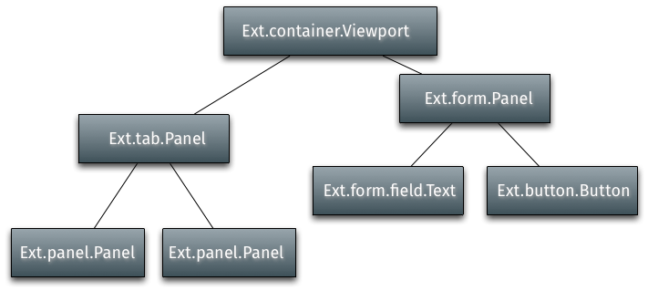

一个 Ext JS 应用的界面由一个或多个叫做 组件的控件组成. 所有的组件都是 Ext.Component 类的子类，这个类可以允许参与包含实例化、渲染、自动大小和位置以及销毁的全自动生命周期管理. Ext JS 默认提供了相当广泛的有用的Component组件,并且任一组件能够简单地扩展出定制的组件.
组件结构
容器 是一种能够包含别的组件的特殊类型的组件.一个典型应用是由许多以叫做组件结构的树形结构嵌套组件构成. 容器负责其下的组件的生命周期管理 ,包含创建、渲染、自动大小 、位置和销毁. 一个典型的应用组件结构开始于一个在顶层的 Viewport 组件,该组件包含容器和/或其下面嵌套组件.:

通过使用容器的items配置属性将子组件加入容器中. 这个示例使用 Ext.create() 来实例外二个 Panel,然后将这些面板作为子组件加入Viewport:
Xtype和延迟实例化
每个组件都 有一个叫做xtype的符号名称. 例如 Ext.panel.Panel 有一个 xtype 符号名称叫 ‘panel’. 上面的例子演示了如何将已经实例化了的组件加入到一个容器中.在大型应用中,这不是理想的情况，因为并不是所有的组件需要立即实例化,依赖于应用的使用情况 有些组件可能从来不需要实例化. 例 如在一个使用了Tab Panel 的应用中只有用户点击的标签页的内容需要被渲染.这就是xtype提供的一个功能允许先配置好容器的子组件,但在容器认为需要时才进行实例 化.
下面的示例代码演示延后实例化和使用多标签页Panel(面板)的渲染.每个标签页在渲染时有一个显示一个弹出消息的侦听事件.
Ext.create('Ext.tab.Panel', {
renderTo: Ext.getBody(),
height: 100,
width: 200,
items: [
{
// Explicitly define the xtype of this Component configuration.
// This tells the Container (the tab panel in this case)
// to instantiate a Ext.panel.Panel when it deems necessary
xtype: 'panel',
title: 'Tab One',
html: 'The first tab',
listeners: {
render: function() {
Ext.MessageBox.alert('Rendered One', 'Tab One was rendered.');
}
}
},
{
// xtype for all Component configurations in a Container
title: 'Tab Two',
html: 'The second tab',
listeners: {
render: function() {
Ext.MessageBox.alert('Rendered One', 'Tab Two was rendered.');
}
}
}
]
});运行这段代码结果是会立即为第一个标签页弹了消息. 这是因为它是默认的激活标签页,如是容器标签页Panel立即实例化和渲染了.

第二个标签页的弹出框将直到这个标签页被点击才会显示.这个说明了这个标签页直到需要时才被渲染,因而渲染的事件直到该标签页激活时才被触发.

显示和隐藏
所有的 组件 内置肯 show和hide 二个方法. 默认的 CSS 方法用于隐藏组件的是 “display: none”, 但是这个可以使用 hideMode 配置来修改:
var panel = Ext.create('Ext.panel.Panel', {
renderTo: Ext.getBody(),
title: 'Test',
html: 'Test Panel',
hideMode: 'visibility' // use the CSS visibility property to show and hide this
component
});
panel.hide(); // hide the component
panel.show(); // show the component浮动组件
浮动 组件 使用CSS的绝对定位功能定位在document的外部, 不参与空喊的布局.一些组件像 Window(窗体) 是默认浮动的,但任意一个组件都可以使用 floating(浮动) 的配置设置成可浮动的.
var panel = Ext.create('Ext.panel.Panel', {
width: 200,
height: 100,
floating: true, // make this panel an absolutely-positioned floating component
title: 'Test',
html: 'Test Panel'
});上面的代码中实例化一个 Panel(面板) 但并不渲染. 通常一个组件有一个配置好的 renderTo , 或者做为一个加入 Containe（容器）的子组件, 但在浮动组件这种情况下这二个都不需要. 浮动组件当它们的show 方法第一次调用时自动渲染到 html文档的正文里(html body):
panel.show(); // render and show the floating panel这里是一些其它值得注意的关于浮动组件的配置和方法:
- draggable - 允许在屏幕中拖动一个浮动组件.
- shadow - 自定义一个浮动组件阴影的样子.
- alignTo() - 将浮动组件与一个特定的元素对齐.
- center() - 在浮动组件的窗口中居中.
创建定制组件
创建或继承
当我们创建一个新的用户界面类时，我们必须决定这个类是需要有一个属于自己的Component(组件) 或者是继承那个组件.
建议继承一个你需要的功能的一个最接近的基类. 这是因为Ext JS的自动组件生命周期管理功能提供了当一个合适的布局管理器会自动管理组件的按需渲染,自动大小的组件位置,并且自动从一个 Container（容器） 中销毁.
写一个新的组件类,并且以组件结构来管理位置相对于写一个有 Ext JS 组件的新类然后不得不在框架外去渲染它要相对容易.
创建子类,
类系统 使得继承任意一部分的 Ext JS 框架变得容易.
Ext.Base 是所有 Ext JS 类的构建代码块, 这个类的原型和静态成员会被所有其它类继承.
当你确定要在Ext.Base的最底层增加新的功能时,大多数情况下开发人员要在继承链中开始一些高级的处理.
下面的例子新建一个 Ext.Component 的子类:
Ext.define('My.custom.Component', {
extend: 'Ext.Component',
newMethod : function() {
//...
}
});这个例子新建了一个类叫做, My.custom.Component, 它继承了 Ext.Component的所有功能(方法,属性等等),同时可以定义任意新的方法和属性.
模版方法
Ext JS 使用 Template method pattern(模版方法模式) 代理子类,子类特定的行为.
这个意味着在组件的生命周期中在继承链条中的每个类在确定的阶段都会"贡献"一些特别的逻辑片段.每个类实现了它自己的动作而允许在继承链条中的其它类可以继续贡献它们自己的逻辑.
一个例子是这个render(渲染)函数. render 是 Componen(组件)中定义的一个函数. 它负责发起组件的生命周期中的渲染阶段. render 一定不能被覆写,但它在执行过程中会调用 onRender ,这个允许子类实现时增加一个 onRender 方法来执行子类特定的处理. 每个 onRender 方法在"贡献"自己特殊逻辑时要先调用父类的 onRender 方法.
下图说明了 onRender 模版方法的功能.
调用 render 方法 (这个是通过窗口的布局管理器完成). 这个方法不能覆写并且由 Ext 的基础类来实现. 它会调用当前子类实现的 this.onRender 方法(如果实现了). 这会调用叫父类版本等的父类版本. 最终,每个类提供了它自己的功能,控件再返回 render 函数.
 这是一个实现了
这是一个实现了onRender 方法的组件子类示例:
Ext.define('My.custom.Component', {
extend: 'Ext.Component',
onRender: function() {
this.callParent(arguments); // call the superclass onRender method
// perform additional rendering tasks here.
}
});要重点关注的是很多模版方法同时有一个相关的事件. 例如这个 render 事件在组件渲染后被触发. 创建一个子类时,然而在类的生命周期重要的阶段还是必须要用模版方法来执行类的逻辑而不是事件. 事件可能被程序挂起，或者被一个处理器停止
下面的模版方法能被组件的子类实现:
initComponent这个方法由构造器调用.用于初始化数据,建立配置和关联事件处理器.beforeShow这个方法在组件显示前调用.onShow允许在显示操作时增加额外的操作.在调用父类的 onShow 后, 组件会显示.afterShow这个方法在组件显示完后被调用.onShowComplete这个方法在afterShow方法执行完成后调用.onHide允许在隐藏操作时增加额外的操作. 调用父类的 onHide后, 组件会隐藏.afterHide这个方法在组件隐藏完后调用.onRender允许在渲染阶段执行额外的操作.afterRender允许在渲染完成后执行额外的操作. 在这个阶段组件的元素会根据配置样式化了,会配置好已增加的 CSS 样式,会配置成可见和配置可用的状态.onEnable允许启用操作执行的额外操作. 在调用父类的 onEnable后,组件将启用.onDisable允许禁用操作执行的额外操作. 在调用父类的 onDisable后,组件将禁用.onAdded允许添加新的组件到容器时执行额外操作. 在这个阶段,组件在父容器的子组件列表中. 在调用父类的 onAdded 时, 将展现 ownerCt 引用, 如果配置了引用, refOwner 将被设置.onRemoved允许从父容器中删除一个组件时执行的额外操作. 在这个阶段,组件已经从父容器的子组件表表中删除了, 但还没被销毁 (如果父容器的 autoDestroy 设为 true,那就会被销毁, 或者这个删除调用的第二个参数传递为真值). 调用父类的 onRemoved 方法后, ownerCt 和 refOwner 将不会展现.onResize允许改变组件大小时执行额外操作.onPosition允许改变组件位置时执行额外操作.onDestroy允许销毁操作时执行额外操作. 在调用父类的 onDestroy 方法后, 组件将被销毁.beforeDestroy这个方法在组件被销毁前调用.afterSetPosition这个方法在组件位置被设置后调用.afterComponentLayout这个方法在组件布局完成后调用.beforeComponentLayout这个方法在组件布局完成前调用.
基于哪个类来继承
选择最好的类来继承主要是效率问题,和基类必须提供哪些能力. 每当有一套UI组件需要渲染和管理时,有一个趋势是总是继承 Ext.panel.Panel .
Panel(面板) 类有很多能力:
- Border(边界)
- Header(头部)
- Header tools(头部工具)
- Footer(底部)
- Footer buttons(底部按钮)
- Top toolbar(顶端工具栏)
- Bottom toolbar(底部工具栏)
- Containing and managing child Components(包含和管理子组件)
如果不需要这些,那么使用面板(Panel)就是一种资源浪费.
Component
如果这个需要的UI组件不需要包含其它组件,就是说,如果它只是封装一些HTML表单来实现需求,那么继承 Ext.Component 是合适的. 例如, 下面这个类是一个包装一个HTML image元素的组件,并允许设置和获取 image的 src 属性. 它同时在图片加载时触发一个 load(加载) 事件:
Ext.define('Ext.ux.Image', {
extend: 'Ext.Component', // subclass Ext.Component
alias: 'widget.managedimage', // this component will have an xtype of 'managedimage'
autoEl: {
tag: 'img',
src: Ext.BLANK_IMAGE_URL,
cls: 'my-managed-image'
},
// Add custom processing to the onRender phase.
// Add a 'load' listener to the element.
onRender: function() {
this.autoEl = Ext.apply({}, this.initialConfig, this.autoEl);
this.callParent(arguments);
this.el.on('load', this.onLoad, this);
},
onLoad: function() {
this.fireEvent('load', this);
},
setSrc: function(src) {
if (this.rendered) {
this.el.dom.src = src;
} else {
this.src = src;
}
},
getSrc: function(src) {
return this.el.dom.src || this.src;
}
});使用方法:
var image = Ext.create('Ext.ux.Image');
Ext.create('Ext.panel.Panel', {
title: 'Image Panel',
height: 200,
renderTo: Ext.getBody(),
items: [ image ]
});
image.on('load', function() {
console.log('image loaded: ', image.getSrc());
});
image.setSrc('http://www.sencha.com/img/sencha-large.png');这个例子仅仅用于演示目的 - 这个 Ext.Img 类在一个真害的应用中应该用于管理图片..
Container(容器)
如果这个需要的UI组件需要包含其它组件,但是不需要Panel(面板) 中前面提到的任一一个特别的能力, 那么 Ext.container.Container 是需要继承的合适的类. 在这个 Container(容器) 层面, 重要的是记住哪个 Ext.layout.container.Container 用于渲染和管理子组件.
Container(容器) 有以下附加的模版方法:
onBeforeAdd在添加一个新的子组件前调用. 这个方法传递新的组件,在修改组件时可以用到,或者在以一定方式准备容器时.异常退出添加操作时返回false.onAdd这个方法在一个新的组件添加完成后被调用. 这个方法传递刚刚已添加的组件.这个方法可能用于更新任意依赖于子组件状态的内部结构.onRemove这个方法在一个新的组件删除后调用.这个方法传递已经删除的组件.这个方法可能用于更新任意依赖于子组件状态的内部结构.beforeLayout这个方法在容器布局(如果需要并渲染)完它的子组件前调用.afterLayout这个方法在容器布局(如果需要并渲染)完它的子组件后调用.
Panel(面板)
如果需要的UI组件必须有一个头部、底部或者是工具栏,那么 Ext.panel.Panel 是个合适的类来继承.
重要: Panel(面板)是一个Container(容器). 务必记住Layout(布局)用于渲染和管理其中的子组件.
继承自 Ext.panel.Panel 的类通常与应用高度相关并且一般来说用于集合在一个配置的布局中的其它UI 组件 (通常是容器Containers,或者是表单字段), 并且提供意味着操作包含在其中的组件和在tbar和bbar中的控件.
Panels(面板) 有如下附加的模版方法:
afterCollapse这个方法在面板收缩后调用.afterExpand这个方法在面板展开后调用onDockedAdd这个方法在一个加入面板的子组件停靠后调用onDockedRemove这个方法在一个停靠子组组从面板中删除后调用